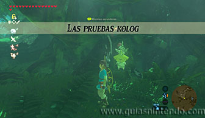
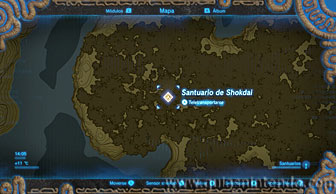
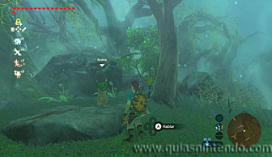
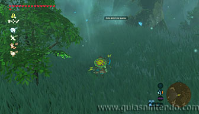
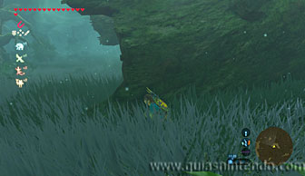
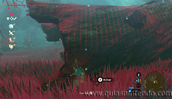
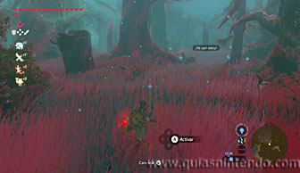
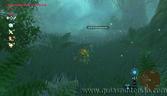
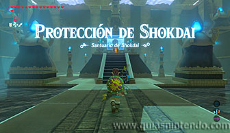
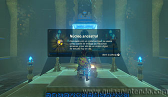

Puedes entrar en este santuario desde que llegas a la región de la torre del bosque, pero tendrás que superar una prueba heroica para poder entrar. La prueba consiste en seguir a un pequeño kolog (Acaz) sin que se percate de tu presencia y se llama "El peregrinaje". Para activarla tienes que hablar con Gingo junto al Gran Árbol Deku para activar las pruebas kolog. Después ve por el camino del noroeste. Ten en cuenta que para avanzar por el Bosque Kolog solo puedes seguir los caminos predeterminados (por donde hay menos niebla o senderos iluminados), si intentas ir por otro camino te envolverá la niebla y regresarás al último punto válido en el que estuviste.

Una vez que sigas el camino válido hacia el noroeste, encontrarás sobre una roca a Nokke. Él dará comienzo a la prueba heroica. A partir de este momento debes agacharte y caminar lentamente, si te acercas demasiado a Acaz o haces mucho ruido te descubrirá y deberás comenzar de nuevo la prueba. Si por el contrario consigues seguirle hasta el final del recorrido, completarás la prueba y encontrarás la entrada al santuario.

Hay un momento donde debes pararte, ya que el pequeño kolog también se para e incluso retrocede un poco y es fácil que pueda verte. Es el momento en el que se mete tras un tronco de árbol hueco tumbado, lo mejor es que te cubras tras él y esperes a que termine de hablar (dice que ha visto una sombra) y vuelva a caminar. Si quieres, puedes usar el imán para ver mejor al pequeño kolog cuando lo pierdas de vista entre la hierba (aunque si lo dejas puesto no podrás caminar agachado y tendrás que moverte lentamente para no hacer ruido).

Después de ese momento no correrás peligro de ser visto (siempre que no hagas mucho ruido y no te acerques a él). Así podrás llegar al santuario y entonces sí, hablar con el pequeño kolog.

Entra en el santuario y simplemente avanza para encontrar el cofre que contiene un núcleo ancestral. Cuando llegues al altar del santuario examínalo para obtener un símbolo de valía.
